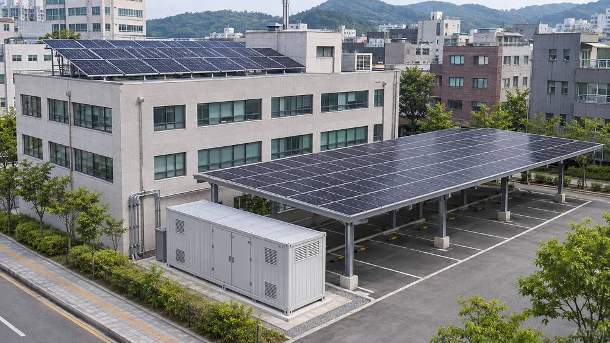

대전시, 에너지기술연구원·한전KDN과 분산에너지 협약…ESS·가상발전소로 지역 전력 수급 안정 추진

17일 대전컨벤션센터 태양광 포럼에서 업무협약, 시는 대상지 발굴·행정 지원 맡아, 250여 명 참석
대전시가 17일 대전컨벤션센터(DCC)에서 한국에너지기술연구원, 한전KDN과 재생에너지 확산과 분산에너지 인프라 구축을 위한 업무협약(MOU)을 맺었다. 시는 사업 대상지 발굴과 행정 지원을, 에너지기술연구원은 발전소 기술 자문과 태양광 연구성과 실증을, 한전KDN은 재생에너지 통합 관리용 에너지 ICT 솔루션 구축·운영을 맡는다. 세 기관은 에너지저장장치(ESS)와 가상발전소(VPP)로 지역 전력 수급을 안정적으로 운영하는 체계를 만들고, 정부 공모사업에도 함께 대응할 계획이다. 에너지 분야 ESG·사회공헌 협력을 넓히고 실무협의체를 꾸려 세부 과제를 정하기로 했으며, 시는 분산에너지 특화지역 지정을 추진 중이다.
협약은 '태양광으로 여는 대전의 미래' 포럼에서 맺었다. 제9회 세계태양광총회(WCPEC-9) 특별세션인 이 행사에는 대학생 200여 명 등 250여 명이 참석했고, 국내 재생에너지 정책 방향과 건물일체형태양광(BIPV) 확산 전략, 에너지자립마을·산업단지 지붕형 태양광 구축 사례가 소개됐다. 분산에너지는 전력을 쓰는 곳 가까이에서 태양광 등으로 만들어 쓰는 '지산지소(地産地消)' 방식으로, 송전 손실과 전력망 부담을 줄인다는 설명이다. 허태정 대전시장은 "지역에서 생산한 전기를 지역에서 소비하는 대전형 분산에너지 체계를 구축해 에너지 자립도를 높이고 지속가능한 도시 기반을 마련하겠다"고 밝혔다.
시민에너지 관점
분산에너지는 전기를 쓰는 곳 가까이에서 만들어 송전 손실과 전력망 부담을 줄이는 구조인데, 이번 협약의 당사자는 시와 연구기관, 공기업 세 곳이다. 지산지소가 구호에 그치지 않으려면 설비를 누가 소유하고 수익이 누구에게 돌아가는지가 협약 뒤에도 분명해야 한다. 독일에서는 시민에너지협동조합이 재생에너지 확대의 한 축을 맡아 왔고, 주민이 지분을 가진 설비는 지역에 이익이 남는 구조라는 점에서 호응을 얻어 왔다. 실무협의체가 세부 과제를 정하기 전에 주민과 지역 협동조합이 참여할 자리를 요구하고, 특화지역 지정 과정에서 주민 지분과 수익 공유 방식을 묻는 것이 시민이 지금 할 수 있는 일이다.
출처: 뉴시스(파이낸셜뉴스 게재) 2026-11-17 곽상훈 원문 보기
大田市、エネルギー技術研究院・韓電KDNと分散エネルギー協約…ESS・仮想発電所で地域の電力需給安定を目指す
17日、大田コンベンションセンターの太陽光フォーラムで業務協約、市は対象地の発掘と行政支援を担当、250人余りが参加
大田市（대전시）は17日、大田コンベンションセンター（DCC）で、韓国エネルギー技術研究院（한국에너지기술연구원）、韓電KDN（한전KDN）と、再生可能エネルギーの拡大と分散エネルギーインフラ構築のための業務協約（MOU）を結んだ。市は事業対象地の発掘と行政支援を、エネルギー技術研究院は発電所の技術助言と太陽光の研究成果の実証を、韓電KDNは再生可能エネルギーの統合管理用エネルギーICTソリューションの構築・運営を担う。3機関はエネルギー貯蔵装置（ESS）と仮想発電所（VPP）で地域の電力需給を安定的に運営する体制をつくり、政府の公募事業にも共同で対応する計画だ。エネルギー分野のESG・社会貢献協力を広げ、実務協議体を設けて細部の課題を決めることにしており、市は分散エネルギー特化地域の指定を進めている。
協約は「太陽光で開く大田の未来」フォーラムで結ばれた。第9回世界太陽光会議（WCPEC-9）の特別セッションであるこの催しには、大学生200人余りなど250人余りが参加し、国内の再生可能エネルギー政策の方向、建物一体型太陽光（BIPV）の拡大戦略、エネルギー自立マウル・産業団地の屋根型太陽光の構築事例が紹介された。分散エネルギーは、電力を使う場所の近くで太陽光などにより作って使う「地産地消」方式で、送電損失と電力網の負担を減らすという説明だ。許泰鼎（허태정）大田市長は「地域で生産した電気を地域で消費する大田型分散エネルギー体制を構築し、エネルギー自立度を高めて持続可能な都市基盤を整える」と述べた。
市民エネルギーの視点
分散エネルギーは電気を使う場所の近くで作り、送電損失と電力網の負担を減らす仕組みだが、今回の協約の当事者は市と研究機関、公企業の3者である。地産地消がスローガンにとどまらないためには、設備を誰が所有し、収益が誰に戻るのかが、協約の後も明確でなければならない。ドイツでは市民エネルギー協同組合が再生可能エネルギー拡大の一翼を担ってきたし、住民が持分を持つ設備は地域に利益が残る構造だとして支持を得てきた。実務協議体が細部の課題を決める前に、住民と地域の協同組合が参加する席を求め、特化地域の指定過程で住民の持分と収益共有の方法を問うことが、市民が今できることである。
出典: 뉴시스(파이낸셜뉴스 게재) 2026-11-17 곽상훈 原文を読む
大田市与能源技术研究院、韩电KDN签署分布式能源协议…以储能和虚拟电厂稳定地区电力供需
17日在大田会展中心光伏论坛上签署业务协议，市政府负责选址和行政支持，250余人出席
大田市（대전시）17日在大田会展中心（DCC），与韩国能源技术研究院（한국에너지기술연구원）、韩电KDN（한전KDN）签署了为扩大可再生能源和建设分布式能源基础设施的业务协议（MOU）。市政府负责挖掘项目选址和提供行政支持，能源技术研究院负责电站技术咨询和光伏研究成果示范，韩电KDN负责建设和运营可再生能源综合管理用的能源ICT解决方案。三方计划以储能装置（ESS）和虚拟电厂（VPP）搭建稳定运营地区电力供需的体系，并共同应对政府公募项目。三方还将扩大能源领域ESG和社会贡献合作，并组建实务协商机制确定具体课题，市政府正在推进分布式能源特色地区的指定。
协议是在“用太阳能开启大田的未来”论坛上签署的。这场论坛是第9届世界光伏大会（WCPEC-9）的特别分会，有大学生200余人等250余人出席，会上介绍了国内可再生能源政策方向、建筑一体化光伏（BIPV）推广战略，以及能源自立村和产业园区屋顶光伏的建设案例。分布式能源是在用电地点附近用光伏等发电并使用的“地产地销”方式，据称可以减少输电损耗和电网负担。大田市长许泰鼎（허태정）表示：“要建设在本地生产的电力在本地消费的大田型分布式能源体系，提高能源自给度，打下可持续城市的基础。”
市民能源视角
分布式能源是在用电地点附近发电、减少输电损耗和电网负担的结构，但这次协议的当事方是市政府、研究机构和公营企业三方。要让“地产地销”不止于口号，设备由谁所有、收益归谁，在协议之后也必须明确。在德国，市民能源合作社一直是扩大可再生能源的一支力量，居民持股的设施因利益留在本地而受到支持。在实务协商机制确定具体课题之前，要求为居民和本地合作社留出参与席位，并在特色地区指定过程中追问居民持股和收益共享方式，是市民现在能做的事。
来源: 뉴시스(파이낸셜뉴스 게재) 2026-11-17 곽상훈 查看原文
Daejeon signs distributed energy pact with energy research institute and KEPCO KDN, aiming to stabilize local power supply with storage and virtual power plants
Memorandum signed on the 17th at a solar forum at Daejeon Convention Center; the city will find sites and provide administrative support; more than 250 attended
Daejeon Metropolitan City (대전시) signed a memorandum of understanding (MOU) on the 17th at Daejeon Convention Center (DCC) with the Korea Institute of Energy Research (한국에너지기술연구원) and KEPCO KDN (한전KDN) to expand renewable energy and build distributed energy infrastructure. The city will find project sites and provide administrative support, the institute will give technical advice on power plants and demonstrate its solar research results, and KEPCO KDN will build and run an energy ICT solution for integrated management of renewables. The three bodies plan to build a system that keeps local power supply and demand stable with energy storage systems (ESS) and virtual power plants (VPP), and to respond jointly to government calls for projects. They will also widen cooperation on energy-sector ESG and social contribution and set up a working-level council to decide detailed tasks, while the city is pushing to be designated a distributed energy special zone.
The agreement was signed at a forum titled "Daejeon's Future Opened by Solar." The event, a special session of the 9th World Conference on Photovoltaic Energy Conversion (WCPEC-9), drew more than 250 people, including more than 200 university students, and presented the direction of national renewable energy policy, strategies for spreading building-integrated photovoltaics (BIPV), and cases of energy self-reliant villages and rooftop solar at industrial complexes. Distributed energy is a "local production for local consumption" (지산지소) approach that generates power from solar and other sources near where it is used, and is explained as reducing transmission losses and strain on the grid. Daejeon Mayor Heo Tae-jung (허태정) said: "We will build a Daejeon-style distributed energy system that consumes locally produced electricity locally, raising energy self-sufficiency and laying the groundwork for a sustainable city."
Citizen Energy View
Distributed energy generates power near where it is used and eases transmission losses and grid strain, but the parties to this agreement are three bodies: the city, a research institute and a public enterprise. For local production for local consumption to be more than a slogan, who owns the equipment and who receives the revenue must be clear even after the agreement. In Germany, citizen energy cooperatives have been one pillar of renewable energy expansion, and facilities in which residents hold shares have won support because the benefits stay in the community. Before the working-level council settles the detailed tasks, citizens can ask for a seat for residents and local cooperatives, and ask during the special zone designation how resident shares and revenue sharing will work.
Source: 뉴시스(파이낸셜뉴스 게재) 2026-11-17 곽상훈 Read the original